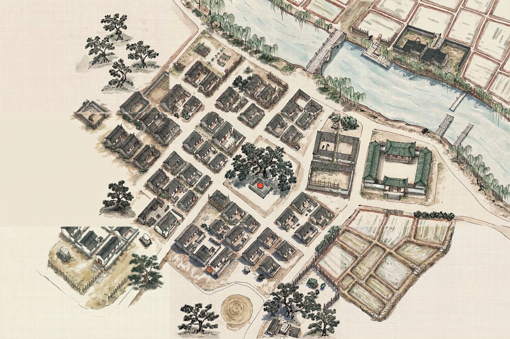

井
民 国 沙 井 村 · 七 十 二 户 舆 图
据《沙井村72户人物信息归集表》照录人物、时令、经济与村务诸条。
每月一案，抉择关乎村款、人望与乡里嫌隙。岁末结算，验其成效。
入 村
续 前 月
按 ENTER 亦可
井
沙井村
七十二户 · 村落舆图
正月
第 1 年
村 款
100
元
人 望
50
矛 盾
30
寻 人
重 开

沙 井 村 舆 图
七十二户 · 归集表照录
〇
二里
北
−
＋
族
正在铺展村图…